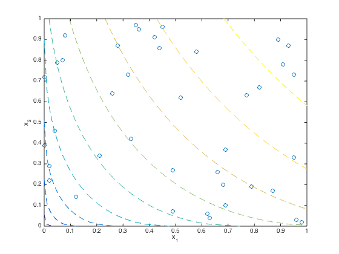
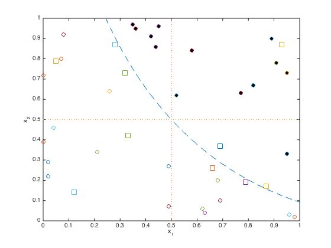

% Section 6.5.5, Figures 6.25-6.26 % Boyd & Vandenberghe "Convex Optimization" % Original by Lieven Vandenberghe % Adapted for CVX Argyris Zymnis - 11/30/2005 % % We are given a set of consumer preference data for bundles % of two goods x_1 and x_2. These points are generated by % taking 40 random points and comparing them using the % utility function: u(x_1,x_2) = (1.1*sqrt(x_1)+0.8*sqrt(x_2))/1.9 % Then, if we have u(i) >= u(j) we say that (i,j) is in Pweak. % % Given this, we wish to compare the point (0.5,0.5) to each % of the bundles in the given dataset. I.e. for each point k in the % dataset, we wish to decide wether u(k) >= u(0) or u(k) <= u(0), % or both, in which case we cannot make any conclusions about % consumer preferences. % % To do this, we have to solve two LPs for each point: % minimize u(k) - u(0) % subject to g_i >= 0 % u(j) <= u(i) + g_i^T(a_j - a_i), for all i,j % u(i) >= u(j), for all (i,j) in Pweak % % and: % maximize u(k) - u(0) % subject to g_i >= 0 % u(j) <= u(i) + g_i^T(a_j - a_i), for all i,j % u(i) >= u(j), for all (i,j) in Pweak % % If the second LP has a strictly negative solution, we can deduce that % u(k) < u(0). If on the other hand the second LP has a nonnegative % solution and the first LP has a strictly positive solution, we can % deduce that u(k) > u(0). Finally if none of the two previous cases % holds, we cannot make a decision between the two bundles. % % NOTE: This file requires the auxilliary function utilfun.m to run. data= [... 4.5e-01 9.6e-01 2.1e-01 3.4e-01 9.6e-01 3.0e-02 8.0e-02 9.2e-01 2.0e-02 2.2e-01 0.0e+00 3.9e-01 2.6e-01 6.4e-01 3.5e-01 9.7e-01 9.1e-01 7.8e-01 1.2e-01 1.4e-01 5.8e-01 8.4e-01 4.9e-01 2.7e-01 7.0e-02 8.0e-01 9.3e-01 8.7e-01 4.4e-01 8.6e-01 3.3e-01 4.2e-01 8.9e-01 9.0e-01 4.9e-01 7.0e-02 9.5e-01 3.3e-01 6.6e-01 2.6e-01 9.5e-01 7.3e-01 4.2e-01 9.1e-01 6.8e-01 2.0e-01 5.2e-01 6.2e-01 7.7e-01 6.3e-01 2.0e-02 2.9e-01 9.8e-01 2.0e-02 5.0e-02 7.9e-01 7.9e-01 1.9e-01 6.2e-01 6.0e-02 2.8e-01 8.7e-01 6.9e-01 1.0e-01 6.9e-01 3.7e-01 0.0e+00 7.2e-01 8.7e-01 1.7e-01 6.3e-01 4.0e-02 3.2e-01 7.3e-01 4.0e-02 4.6e-01 3.6e-01 9.5e-01 8.2e-01 6.7e-01 ]; % objective point obj=[0.5,0.5]; figure(1); % display the utility function's level sets on some data points. plot(data(:,1),data(:,2),'o'); hold on; [X,Y] = meshgrid(0:.01:1,0:.01:1); Z=(1.1*X.^(1/2)+0.8*Y.^(1/2))/1.9; [C,h] = contour(X,Y,Z,[.1,.2,.3,.4,.5,.6,.7,.8,.9],'--'); clear X Y Z C hold off; xlabel('x_1'); ylabel('x_2'); hold off m = size(data,1); % number of baskets, including 0,1 % add preference data Pweak = zeros(m+1,m+1); for i=1:m, for j=1:m if (i~=j) & (1.1*data(i,1).^(1/2)+0.8*data(i,2).^(1/2))/1.9 >= ... (1.1*data(j,1).^(1/2)+0.8*data(j,2).^(1/2))/1.9, Pweak(i,j) = 1; end; end; end; % Find consumer preferences data = [data; 0.5 0.5]; bounds = zeros(m,2); for k = 1:m fprintf(1,'Deciding on bundle %d of %d: ',k,m); % Check for u(k) >= u(0.5,0.5) cvx_begin quiet variables u(m+1) g_x(m+1) g_y(m+1) minimize(u(k)-u(m+1)) subject to g_x >= 0; g_y >= 0; ones(m+1,1)*u' <= u*ones(1,m+1)+(g_x*ones(1,m+1)).*... (ones(m+1,1)*data(:,1)'-data(:,1)*ones(1,m+1))+... (g_y*ones(1,m+1)).*(ones(m+1,1)*data(:,2)'-data(:,2)*ones(1,m+1)); (u*ones(1,m+1)).*Pweak >= (ones(m+1,1)*u').*Pweak; cvx_end bounds(k,1) = cvx_optval; fprintf( 1,'%g', round(cvx_optval) ); % Check for u(0.5,0.5) >= u(k) cvx_begin quiet variables u(m+1) g_x(m+1) g_y(m+1) maximize(u(k)-u(m+1)) subject to g_x >= 0; g_y >= 0; ones(m+1,1)*u' <= u*ones(1,m+1) + (g_x*ones(1,m+1)).*... (ones(m+1,1)*data(:,1)'-data(:,1)*ones(1,m+1))+... (g_y*ones(1,m+1)).*(ones(m+1,1)*data(:,2)'-data(:,2)*ones(1,m+1)); (u*ones(1,m+1)).*Pweak >= (ones(m+1,1)*u').*Pweak; cvx_end bounds(k,2) = cvx_optval; fprintf( 1,' %g\n', round(cvx_optval) ); end figure(2); hold off % plot data pt and contour line through it val = 1.1*sqrt(0.5)+ 0.8*sqrt(.5); % value at center t = linspace(((val-.8)/1.1)^2, 1, 1000); y = ( (val - 1.1*(t.^(1/2)))/.8 ).^2; plot(t,y,'--', [.5 .5], [0 1], ':', [0 1], [.5 .5], ':'); axis([0 1 0 1]); hold on for k=1:m if bounds(k,2) < 1e-5, % preferred over (.5,.5) dot = plot(data(k,1),data(k,2),'o'); %'MarkerSize',8); elseif bounds(k,1) > -1e-5, % rejected in favor of (.5,.5) dot = plot(data(k,1),data(k,2),'o','MarkerFaceColor',[0 0 0]); else % no conclusion dot = plot(data(k,1),data(k,2),'square', 'LineWidth',1.0,... 'MarkerSize',10); end; end; xlabel('x_1'); ylabel('x_2');
Deciding on bundle 1 of 40: 0 Inf Deciding on bundle 2 of 40: -Inf -0 Deciding on bundle 3 of 40: -Inf -0 Deciding on bundle 4 of 40: -Inf -0 Deciding on bundle 5 of 40: -Inf -0 Deciding on bundle 6 of 40: -Inf -0 Deciding on bundle 7 of 40: -Inf -0 Deciding on bundle 8 of 40: 0 Inf Deciding on bundle 9 of 40: 0 Inf Deciding on bundle 10 of 40: -Inf NaN Deciding on bundle 11 of 40: 0 Inf Deciding on bundle 12 of 40: -Inf -0 Deciding on bundle 13 of 40: -Inf -0 Deciding on bundle 14 of 40: NaN Inf Deciding on bundle 15 of 40: 0 Inf Deciding on bundle 16 of 40: -Inf NaN Deciding on bundle 17 of 40: 0 Inf Deciding on bundle 18 of 40: -Inf -0 Deciding on bundle 19 of 40: 0 Inf Deciding on bundle 20 of 40: -Inf NaN Deciding on bundle 21 of 40: 0 Inf Deciding on bundle 22 of 40: 0 Inf Deciding on bundle 23 of 40: -Inf -0 Deciding on bundle 24 of 40: 0 Inf Deciding on bundle 25 of 40: 0 Inf Deciding on bundle 26 of 40: -Inf -0 Deciding on bundle 27 of 40: -Inf -0 Deciding on bundle 28 of 40: -Inf NaN Deciding on bundle 29 of 40: -Inf Inf Deciding on bundle 30 of 40: -Inf -0 Deciding on bundle 31 of 40: -Inf Inf Deciding on bundle 32 of 40: -Inf -0 Deciding on bundle 33 of 40: -Inf Inf Deciding on bundle 34 of 40: -Inf -0 Deciding on bundle 35 of 40: -Inf Inf Deciding on bundle 36 of 40: -Inf -0 Deciding on bundle 37 of 40: -Inf Inf Deciding on bundle 38 of 40: -Inf -0 Deciding on bundle 39 of 40: 0 Inf Deciding on bundle 40 of 40: 0 Inf
 